Full restoration
Complete teardown, cleaning, recap, thermal refresh, and testing so your Xbox returns in top condition.

I’m a local Original Xbox specialist, not a big shop. These services are built around careful restoration and practical repairs that keep your console running for years.
Complete teardown, cleaning, recap, thermal refresh, and testing so your Xbox returns in top condition.
From capacitors to drive belts, I fix the exact parts that cause the most common failures.
Softmods, drive upgrades, and cooling improvements are available when you want more than just repair.
I list the expected costs up front so you can compare services without surprises.
Whether your console needs basic cleanup or a deeper repair, I offer options that match what your Xbox actually needs.
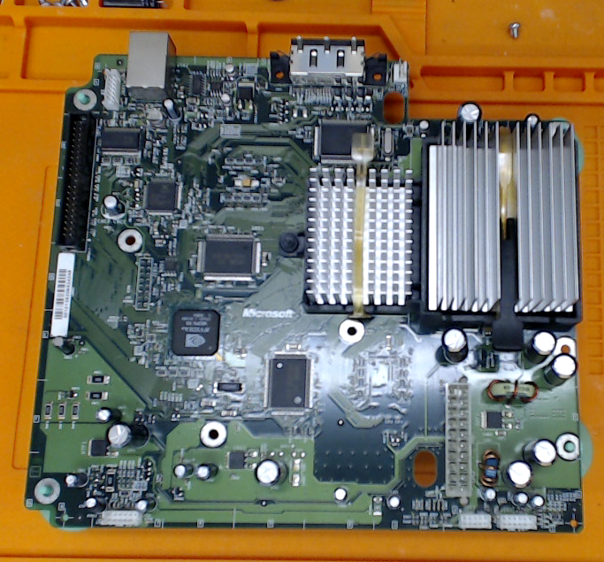
Full inspection and testing to identify issues.
$25 — applied to the total if you proceed with service.
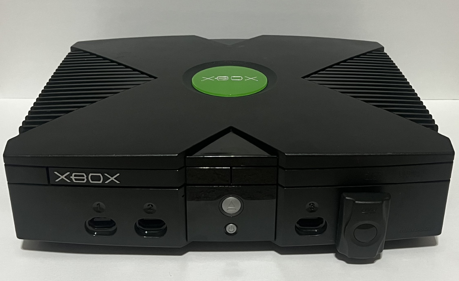
Complete teardown, cleaning, preventative maintenance, capacitor inspection, clock cap replacement, new thermal paste, DVD service, and full testing.
$65
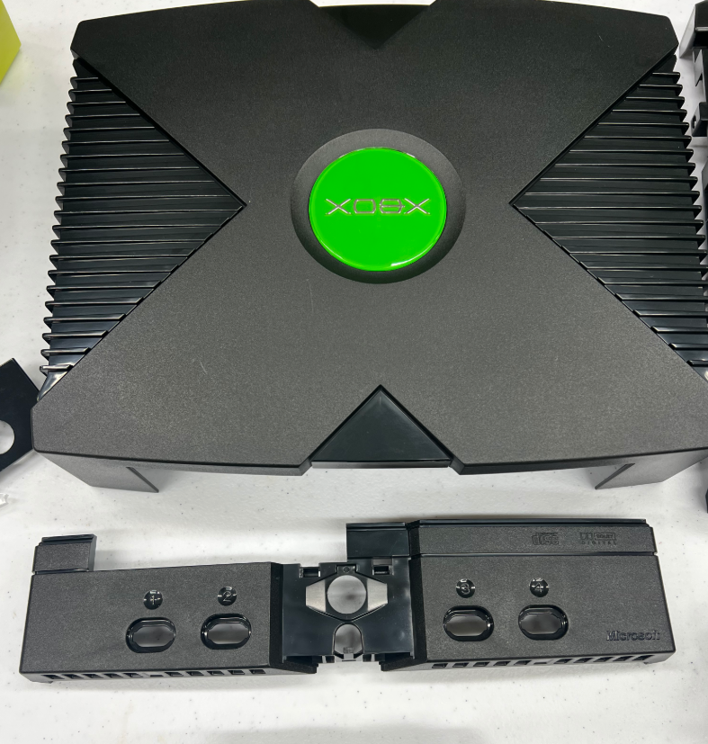
Full deep clean of shell, ports, fans, and internal electronics.
$50
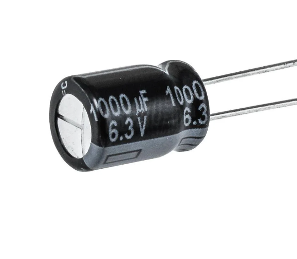
Replace failed or leaking capacitors to prevent board damage and extend console life.
$5 per capacitor (minimum $15)
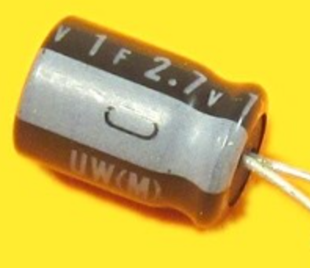
Replace the clock capacitor to protect the motherboard from corrosion and trace rot.
$5
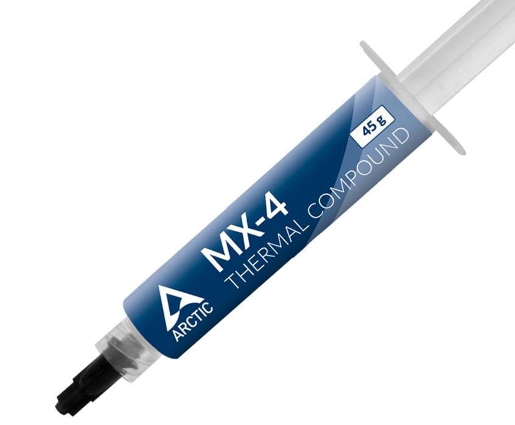
Refresh thermal paste on the CPU and GPU to reduce heat and improve stability.
$10
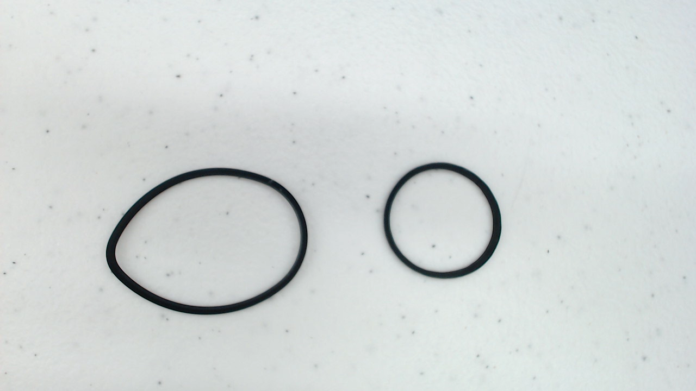
Replace worn drive belts for smooth tray operation and reliable disc reading.
$5
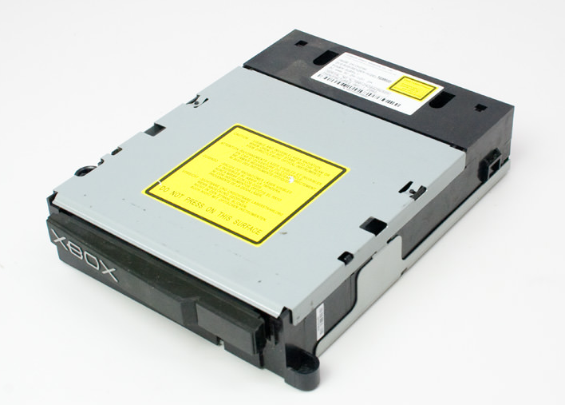
Replace failing or damaged disc drives to restore disc playback.
$50+
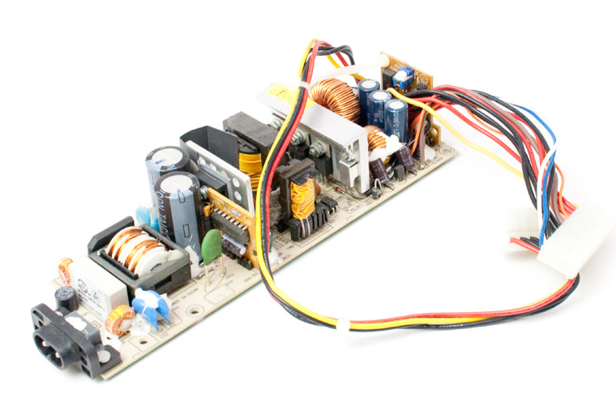
Replace failing or damaged power supplies to keep your Xbox stable and safe.
$60
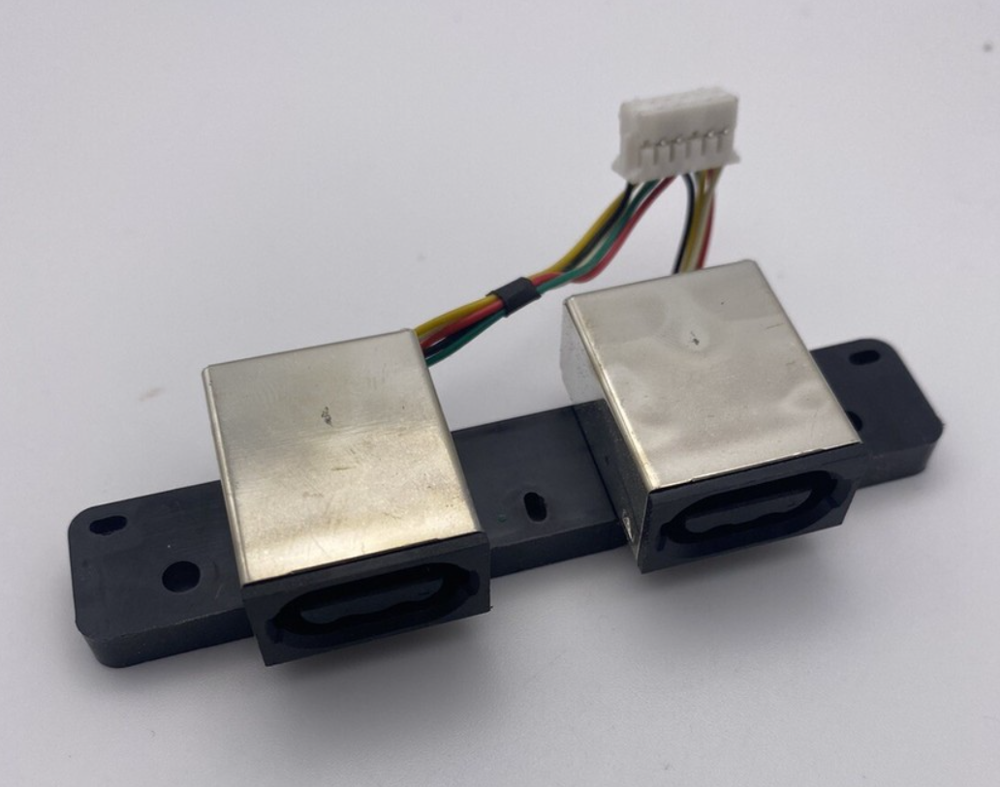
Replace worn or damaged controller ports for reliable controller connection.
$25
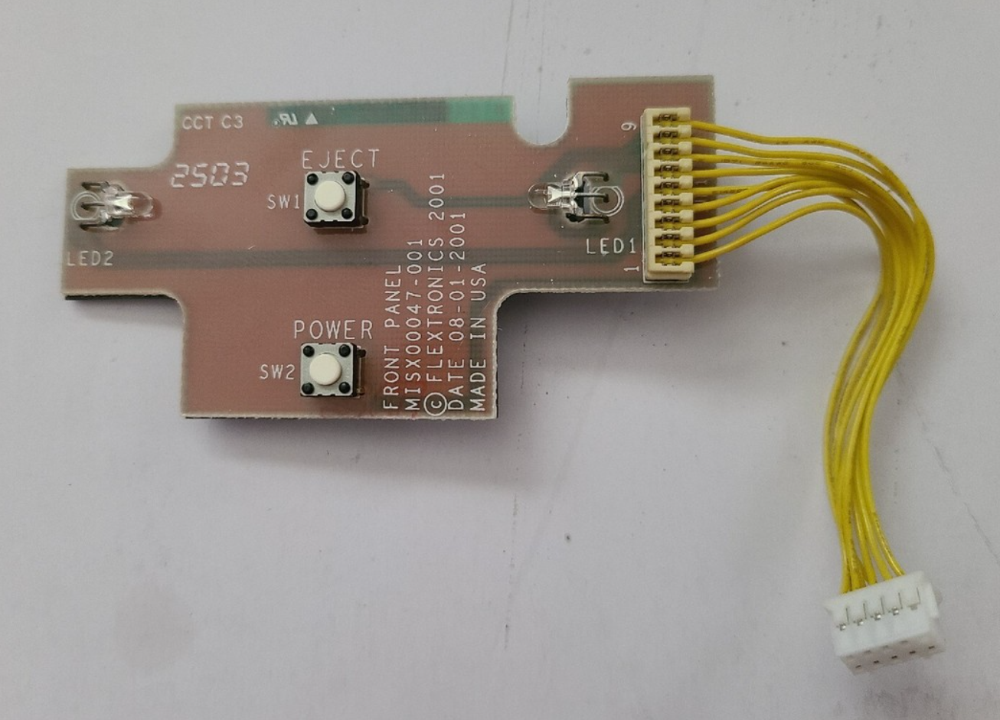
Replace damaged front-panel buttons for better reliability and feel.
$25
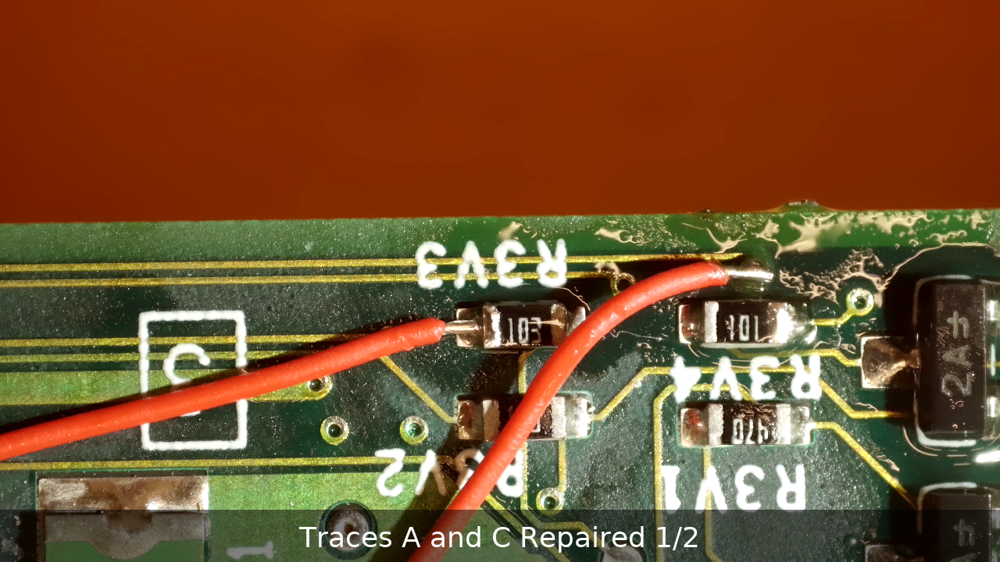
Repair damaged or rotted traces to bring a damaged board back from the brink.
$40+
If your Xbox is showing any of these problems, a timely repair can save you from a much costlier failure later. Use the request page to send details and I’ll follow up with a clear recommendation.
Request Repair